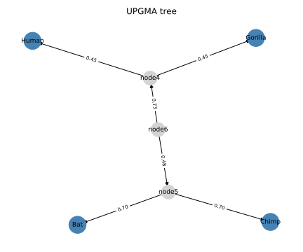

11 Phylogenetic Tree Reconstruction
11.1 The Problem
- Species that share a common ancestor tend to have similar DNA or protein sequences.
- A phylogenetic tree shows how a set of species, genes, or individuals are related by common descent
- The leaves of the tree are the observed taxa, while internal nodes represent hypothetical ancestors
- Given only pairwise sequence distances, we want to infer the tree topology (who is related to whom) and branch lengths (how different they are)
A rooted binary tree on 4 leaves has how many internal nodes (not counting the leaves themselves)?
- 2
- Wrong: a rooted binary tree on N leaves has N-1 internal nodes, so 4-1=3.
- 3
- Correct: a rooted binary tree on N leaves has N-1 internal nodes; here 4-1=3.
- 4
- Wrong: 4 is the number of leaves; the number of internal nodes is N-1=3.
- 5
- Wrong: this would require N=6 leaves.
11.2 Distance Matrices
- A distance matrix \(D\) stores the evolutionary distance between every pair of taxa
- Distances are estimated from aligned sequences: the fraction of positions that differ, corrected for multiple substitutions
The six pairwise distances for our four-taxon example:
| Pair | Distance |
|---|---|
| Bat, Chimp | 1.4 |
| Human, Gorilla | 0.9 |
| Bat, Human | 2.2 |
| Bat, Gorilla | 2.3 |
| Chimp, Human | 2.4 |
| Chimp, Gorilla | 2.5 |
11.3 The UPGMA Algorithm
- UPGMA (Unweighted Pair Group Method with Arithmetic Mean) reconstructs a rooted tree from a distance matrix using only arithmetic means
- At each step, merge the pair of taxa with the smallest pairwise distance
- Place the new internal node at height \(D(i,j)/2\) (i.e., half the merged distance) which is the estimated time of the common ancestor
- Branch length from the new node to each merged taxon is the difference in heights
- Update the distance from the new node \(u\) to any remaining taxon \(k\) as the arithmetic mean:
\[D(u, k) = \frac{D(i, k) + D(j, k)}{2}\]
- Replace \(i\) and \(j\) with \(u\) in the matrix and repeat until only one node remains.
Put these steps for one iteration of UPGMA in the correct order.
- Find the pair (i, j) with the smallest distance in the current matrix
- Create a new internal node u at height D(i, j) / 2
- Record branch lengths: branch to i = height(u) - height(i), branch to j = height(u) - height(j)
- Compute distances from u to all remaining taxa as arithmetic means
- Remove i and j from the matrix, add u, and repeat
11.4 A Worked Example
- Starting with \(n = 4\) taxa and the distances above, Human and Gorilla have the smallest distance (0.9), so they are merged first into node4 at height \(0.9/2 = 0.45\)
- Branch lengths: \(\ell_\text{Human} = 0.45 - 0 = 0.45\) and \(\ell_\text{Gorilla} = 0.45 - 0 = 0.45\) (both start at height 0)
- After replacing Human and Gorilla with node4, the next smallest distance is Bat-Chimp (1.4), which becomes node5 at height \(1.4/2 = 0.70\). Branch lengths to Bat and Chimp are each \(0.70 - 0 = 0.70\).
- The final merge joins node4 and node5. The average distance between node4 and node5, computed as the arithmetic mean of all pairwise distances between the two groups, works out to \(2.35\). The final node (node6) sits at height \(2.35/2 = 1.175\). Branch lengths are \(1.175 - 0.45 = 0.725\) to node4 and \(1.175 - 0.70 = 0.475\) to node5.
Why does UPGMA assume a molecular clock?
- Because it always picks the pair with the smallest distance, regardless of how far each taxon is from others.
- Wrong: that is the merge criterion, not the clock assumption.
- Because it places each internal node at half the merged distance, assuming all lineages evolve at the same rate.
- Correct: placing the node at \(D(i,j)/2\) assumes that \(i\) and \(j\) are equidistant from their common ancestor, which requires equal rates of evolution in both lineages.
- Because it uses arithmetic means to update distances.
- Wrong: the arithmetic mean update is a computational convenience, not the molecular clock assumption.
- Because it produces a rooted tree rather than an unrooted tree.
- Wrong: whether a tree is rooted or unrooted is independent of the clock assumption.
11.5 Displaying the Tree

11.6 Testing
- Matrix symmetry
- Distances must satisfy \(D(i,j) = D(j,i)\) and \(D(i,i) = 0\)
- An asymmetric matrix would indicate a bug in the construction code
- Edge count
- A rooted binary tree on \(N\) leaves has exactly \(2N - 2\) directed edges (each of the \(N - 1\) internal nodes contributes two child edges)
- Any other count means the loop terminated early or ran too many iterations
- Topology recovery
- Two pairs of taxa (Bat, Chimp) and (Human, Gorilla) should each share a private internal node
- If either pair is split across different internal nodes, the algorithm recovered the wrong topology
- Branch length recovery
- With exact tree-additive distances the algorithm recovers every branch length to machine precision
- No tolerance is needed: floating-point round-off in the arithmetic means is below \(10^{-10}\)
- Topology under noise
- Real distance data are not perfectly additive
- With small Gaussian noise (scale 0.05) the correct topology should still be recovered
- This test documents the robustness of UPGMA to modest measurement error
import numpy as np
from phylo import TAXA, make_distance_matrix, upgma
# Tolerance for floating-point comparisons in branch-length tests.
# UPGMA computes only averages and halvings, so round-off is well below 1e-10.
BRANCH_TOLERANCE = 1e-10
def test_matrix_symmetric():
# The distance matrix must be symmetric with zero diagonal.
names, D = make_distance_matrix()
assert np.allclose(D, D.T)
assert np.all(np.diag(D) == 0.0)
def test_upgma_edge_count():
# A rooted binary tree on N leaves has exactly 2N-2 directed edges
# (each internal node contributes two child edges; there are N-1 internal nodes).
names, D = make_distance_matrix()
edges = upgma(names, D)
assert len(edges) == 2 * len(TAXA) - 2
def test_upgma_recovers_topology():
# The reference tree groups (Bat, Chimp) and (Human, Gorilla).
# UPGMA should merge Human+Gorilla first (smallest distance 0.9),
# then Bat+Chimp (next smallest distance 1.4), then join the two clades.
names, D = make_distance_matrix()
edges = upgma(names, D)
# Build parent-child adjacency from edges.
children = {}
for parent, child, _ in edges:
children.setdefault(parent, []).append(child)
# Find the internal node whose children are both leaves from the same clade.
def siblings(taxon_a, taxon_b):
for parent, kids in children.items():
if taxon_a in kids and taxon_b in kids:
return True
return False
assert siblings("Human", "Gorilla"), "Human and Gorilla should be sisters"
assert siblings("Bat", "Chimp"), "Bat and Chimp should be sisters"
def test_upgma_recovers_branch_lengths():
# With exact distances UPGMA should recover branch lengths to machine precision.
# UPGMA merges in this order:
# node4 <- Human (0.45), Gorilla (0.45) [merge height = 0.9/2 = 0.45]
# node5 <- Bat (0.70), Chimp (0.70) [merge height = 1.4/2 = 0.70]
# node6 <- node4 (0.725), node5 (0.475) [merge height = 2.35/2 = 1.175]
# Branch length = merge height of parent - height of child.
expected = {
("node4", "Human"): 0.45,
("node4", "Gorilla"): 0.45,
("node5", "Bat"): 0.70,
("node5", "Chimp"): 0.70,
("node6", "node4"): 0.725,
("node6", "node5"): 0.475,
}
names, D = make_distance_matrix()
edges = upgma(names, D)
assert len(edges) == len(expected), f"Expected {len(expected)} edges, got {len(edges)}"
for parent, child, length in edges:
key = (parent, child)
assert key in expected, f"Unexpected edge {parent} -> {child}"
assert abs(length - expected[key]) < BRANCH_TOLERANCE, (
f"Edge {parent}->{child}: got {length:.8f}, expected {expected[key]:.8f}"
)
def test_upgma_with_noise_recovers_topology():
# With small Gaussian noise (scale 0.05) the correct topology should still
# be recovered. The Human-Gorilla distance (0.9) is well below the next
# smallest (Bat-Chimp at 1.4), so modest noise rarely disrupts the merge order.
names, D = make_distance_matrix(noise_scale=0.05)
edges = upgma(names, D)
children = {}
for parent, child, _ in edges:
children.setdefault(parent, []).append(child)
def siblings(taxon_a, taxon_b):
for parent, kids in children.items():
if taxon_a in kids and taxon_b in kids:
return True
return False
assert siblings("Human", "Gorilla"), (
"Human and Gorilla should be sisters even under small noise"
)
assert siblings("Bat", "Chimp"), (
"Bat and Chimp should be sisters even under small noise"
)11.7 Generating Random Trees
- A single hand-crafted example is useful for tracing through the algorithm, but it cannot reveal how UPGMA behaves on different topologies or at larger scales
generate_tree.pyprovidesmake_random_treewhich builds a random unrooted binary tree and returns its exact distance matrix alongside the true edge list
11.7.1 Building a random topology
- Start with three leaves connected to a single internal node
- For each additional taxon
- Pick a random existing edge
- Insert a new internal node in the middle of it
- Attach the new taxon to that node
- Branch lengths are drawn independently from an exponential distribution with a specified mean
11.7.2 Computing distances and checking topology
- Once the tree is built, pairwise distances are computed as shortest-path lengths through the networkx graph weighted by branch length
- To compare topologies, each tree is converted to its set of bipartitions
- For every edge, the two groups of leaves on either side
- Two trees have the same topology if and only if their bipartition sets are identical
import numpy as np
import pytest
from generate_tree import make_random_tree, bipartitions, MIN_TAXA
from phylo import neighbor_joining
def test_rejects_too_few_taxa():
with pytest.raises(ValueError):
make_random_tree(MIN_TAXA - 1)
def test_edge_count():
# An unrooted binary tree on N leaves has exactly 2N-3 edges.
for n in [3, 5, 8, 12]:
_, _, edges = make_random_tree(n)
assert len(edges) == 2 * n - 3, f"n={n}: got {len(edges)} edges"
def test_distance_matrix_properties():
names, D, _ = make_random_tree(6)
assert D.shape == (6, 6)
assert np.allclose(D, D.T)
assert np.all(np.diag(D) == 0.0)
assert np.all(D >= 0.0)
def test_nj_recovers_true_topology():
# With exact tree-additive distances, NJ must recover every bipartition
# of the generating tree. This holds for all tree-additive inputs
# regardless of topology or branch lengths.
for seed in [1, 7, 42, 99]:
names, D, true_edges = make_random_tree(6, seed=seed)
inferred_edges = neighbor_joining(names, D)
true_splits = bipartitions(true_edges, names)
inferred_splits = bipartitions(inferred_edges, names)
assert true_splits == inferred_splits, (
f"seed={seed}: topology mismatch\n true: {true_splits}\n inferred: {inferred_splits}"
)
def test_nj_recovers_topology_under_noise():
# With small Gaussian noise (scale 0.05 ≈ 10% of the default branch mean)
# NJ should still recover the correct topology on most random trees.
# We test four seeds and require all four to succeed. Measured failure
# rate at this noise level is below 1% for N=6 with branch_mean=0.5.
for seed in [1, 7, 42, 99]:
names, D, true_edges = make_random_tree(6, seed=seed, noise_scale=0.05)
inferred_edges = neighbor_joining(names, D)
true_splits = bipartitions(true_edges, names)
inferred_splits = bipartitions(inferred_edges, names)
assert true_splits == inferred_splits, (
f"seed={seed}: topology mismatch under noise"
)
def test_reproducibility():
# Same seed must always produce identical output.
names1, D1, edges1 = make_random_tree(8)
names2, D2, edges2 = make_random_tree(8)
assert names1 == names2
assert np.array_equal(D1, D2)
assert edges1 == edges2
def test_different_seeds_differ():
_, D1, _ = make_random_tree(6)
_, D2, _ = make_random_tree(6, seed=999)
assert not np.allclose(D1, D2)11.8 Exercises
11.8.1 Do the math
In the first UPGMA iteration Human and Gorilla are merged. \(D(\text{Human}, \text{Gorilla}) = 0.9\). The new internal node is placed at height \(D/2\). What is the branch length from the new node to Human? Give your answer to two decimal places.
11.8.2 Neighbor-joining comparison
Neighbor-joining (Saitou and Nei, 1987) uses a Q-matrix correction that removes long-branch attraction bias and does not assume a molecular clock. Implement neighbor_joining(names, D) returning edges as (node_a, node_b, length) triples. Verify that UPGMA and neighbor-joining agree on the topology for the exact distance matrix, then add noise (scale 0.05) and show a case where they disagree.
11.8.3 Bootstrapping
Phylogenetic bootstrap estimates how well-supported each split is. Draw 100 perturbed distance matrices using make_distance_matrix(noise_scale=0.1, seed=i) for \(i = 0, \ldots, 99\) and run UPGMA on each. Report what fraction of replicates recover the correct (Bat, Chimp) clade.
11.8.4 Four-point condition
A distance matrix is tree-additive if and only if it satisfies the four-point condition: for every four taxa \(i, j, k, l\), the largest two of the three sums \(D(i,j)+D(k,l)\), \(D(i,k)+D(j,l)\), \(D(i,l)+D(j,k)\) are equal. Write is_additive(names, D) that checks this condition for all \(\binom{N}{4}\) quadruples and returns True or False. Verify that the exact matrix passes and a noisy matrix fails.
11.8.5 Larger synthetic trees
Extend make_distance_matrix to accept an arbitrary Newick-format string such as "((A:0.1,B:0.2):0.3,(C:0.4,D:0.5):0.6)" and compute the full distance matrix from it. Use this to generate a 10-taxon example and confirm that UPGMA recovers the correct topology.